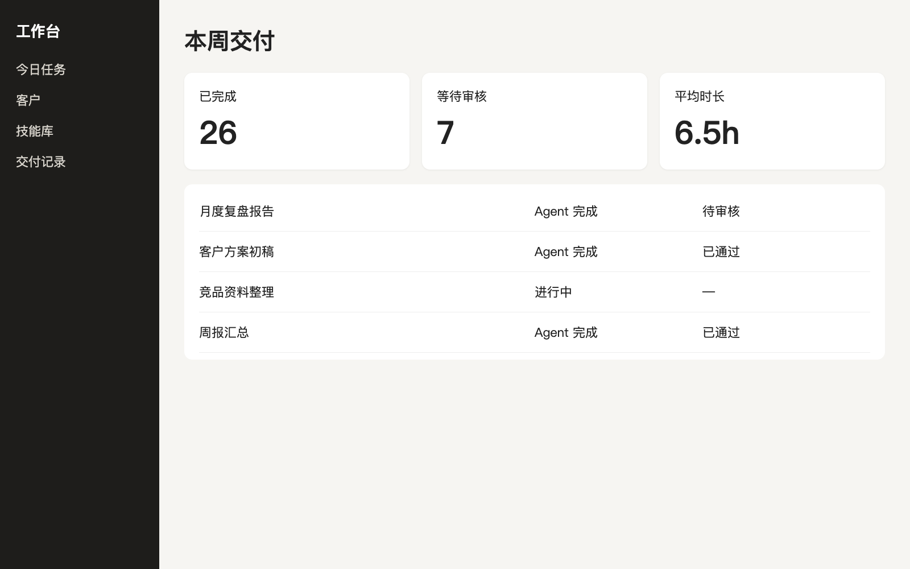

柱状图：比较几个类别
分组柱：同类别比两组
堆叠柱：总量和构成都要看
面积图：累计趋势
堆叠面积：总量和占比随时间变
雷达图：多维能力对比
散点图：两个变量的关系
气泡图：三个变量
瀑布图：一步步走到结果
漏斗：转化与流失
仪表：一个有上限的指标
热力图：两个维度下的强度
矩形树图：大量项目的占比
斜率图：前后变化
哑铃图：多项前后差距
子弹图：实际对目标
甘特图：时间安排
华夫图：一百格看占比
饼图：简单占比
满版图：图片是主角
文字收进一个小面板，避免压在图上。
图文各半：
一张图讲一件事
文字在左，图片贴到右边缘。
产品截图：
放进窗口再讲
左侧导航只留四个入口
首屏先看交付结果

三个要点，并列但不做成卡片
1
先选真实任务
有人负责，有验收标准
2
人和 Agent 一起跑
第一次一定要全程看着
3
把判断写下来
下一次才不用从头开始
三档方案，只推荐一档
试跑
2周
- 一个场景
- 一人跟进
部门落地
6周
- 三个场景
- 技能入库
- 业务接手
全公司
12周
- 专项团队
- 培训与治理
两张图并排：同一件事的两个侧面
使用人数
单次时长
分层：
从底座到体验
体验层业务人员每天打开的入口
技能层沉淀下来的判断和流程
模型层可替换的模型与工具
数据层客户、项目、知识
中心辐射：
一个核心连接多方
工作台统一入口
客户
项目
知识
任务
内容
代码页：只放讲到的那几行
# 把一次成功写成技能 skill create weekly-report \ --from last-run \ --check "数字有出处"